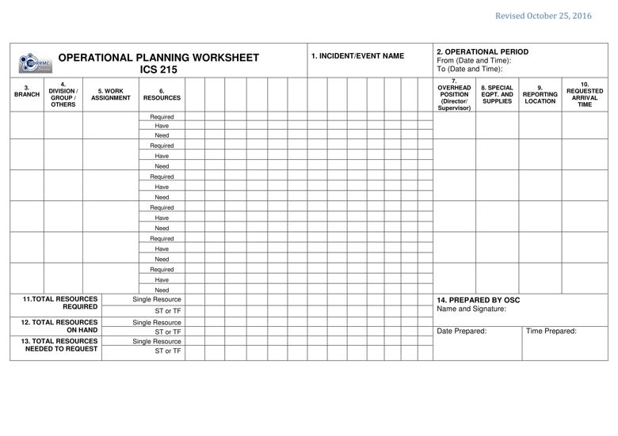

PURPOSE: The ICS 215 communicates the decisions made by the Operations Section Chief (OSC) during the Tactics Meeting concerning resource assignments and needs for the next operational period. It is used by the Resources Unit Leader (RESL) to complete the ICS 204 and by the Logistics Section Chief (LSC) for requesting the resource gaps and requirements.
PREPARATION: The ICS 215 is initiated by the OSC and often involves logistics personnel, RESL and the Safety Officer. It is shared with the rest of the Command and General Staffs during the Planning Meeting.
DISTRIBUTION: When the Branch, Division or Group work assignments and accompanying resource allocations are agreed upon, the form is distributed to the RESL to assist in the preparation of the ICS 204. The LSC will use a copy of ICS 215 for preparing requests for resources required for the next operational period.

BLOCK NO. |
BLOCK TITLE |
INSTRUCTIONS |
| 1 | Incident / Event Name | Enter the name assigned to the incident / event. |
| 2 | Operational Period | Enter the start date (mm-dd-yyyy) and time (24 hour format) and end date and time for the operational period to which the form applies. |
| 3 | Branch | Enter the Branch of the work assignment for the resources, if appropriate. |
| 4 | Division / Group / Others | Enter the Division, Group, or other location (eg Staging Area) of the work assignment for the resources, if appropriate. |
| 5 | Work Assignment | Enter the specific work assignments, locations, and other special instructions, if any. |
| 6 | Resources | Enter the resource headings according to category, kind and type as appropriate. |
| Required | Enter, for the appropriate resource headings, the number of resources required to perform the work assignment. |
|
| Have | Enter, for the appropriate resource headings, the number of resources available to perform the work assignment. |
|
| Need | Enter the number of resources by subtracting the number in the “Have” row from the number in the “Required” row. |
|
| 7 | Overhead Position (Director/Supervisor) | Enter the name of personnel who is not directly assigned to a previously identified resource and may act as the Director/Supervisor for the organized resources. |
| 8 | Special Equipment and Supplies | Enter special equipment and supplies, including aviation support, that are available for the next operational period. |
| 9 | Reporting Location | Enter the specific location where the resources are required to report for work assignment (e.g., Staging area, location of the incident, etc.). |
| 10 | Requested Arrival Time | Enter the time (24 hr format) that the resources are required to arrive at the reporting location. |
| 11 | Total Resources Required | Enter the total number of resources required by category/kind/type as preferred. Indicate the total single resources in the upper portion while the total Strike Teams (ST) or Task Forces (TF) in the bottom portion. Mark ST or TF as appropriate. |
| 12 | Total Resources On Hand | Enter the total number of resources on hand that are assigned for incident or event use. Indicate the total single resources in the upper portion while the total Strike Teams (ST) or Task Forces (TF) in the bottom portion. Mark ST or TF as appropriate. |
| 13 | Total Resources Needed | Enter the total number of resources needed for incident or event use. Indicate the total single resources in the upper portion while the total Strike Teams (ST) or Task Forces (TF) in the bottom portion. Mark ST or TF as appropriate. |
| 14 | Prepared by OSC | Enter complete name of the OSC, signature, date (mm-dd-yyyy), and time (24 hour format) the form was prepared and completed. |